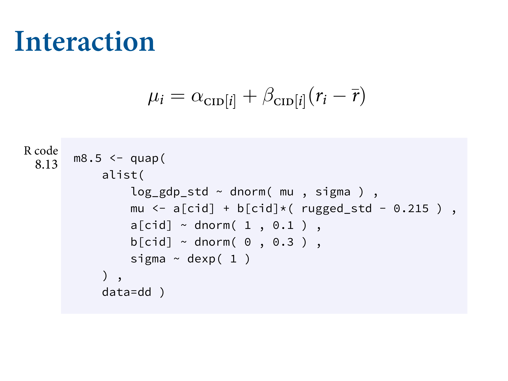
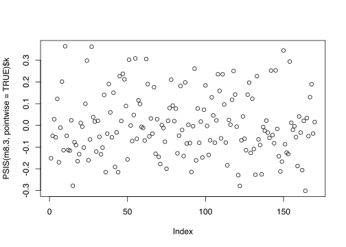

8.1 Building an interaction
Economics of Africa. Africa is really really big. A lot of diversity - economies, language, environment - makes it interesting because it creates a lot of natural experiments.
There’s a feature of the terrain which is ruggedness, which is bad becasuse it makes it hard to move things. On the right is normalised. 0 is perfectly flat, 1 is Lesotho, the world’s most rugged place. Kind of like Switzerland. Really strong negative relationship with GDP. But in Africa, the relationship goes in the other direction. Removing outliers doesn’t remove the difference between the continents. So what’s going on?
library(rethinking)
data(rugged)
d <- rugged
# make log version of outcome
d$log_gdp <- log( d$rgdppc_2000 )
# extract countries with GDP data
dd <- d[ complete.cases(d$rgdppc_2000) , ]
# rescale variables
dd$log_gdp_std <- dd$log_gdp / mean(dd$log_gdp)
dd$rugged_std <- dd$rugged / max(dd$rugged)Remember that using \(\bar{r}\) just makes it easier to assign a prior to the intercept \(\alpha\).
Consider first the intercept, \(\alpha\), defined as the log GDP when ruggedness is at the sample mean. So it must be close to 1, because we scaled the outcome so that the mean is 1.
Now for \(\beta\), the slope. If we center it on zero, that indicates no bias for positive or negative, which makes sense. But what about the standard deviation? Let’s start with a guess at 1.
And finally, let’s assign \(\sigma\) something very broad, \(\sigma \sim Exponential(1)\).
m8.1 <- quap(
alist(
log_gdp_std ~ dnorm( mu , sigma ) ,
mu <- a + b*( rugged_std - 0.215 ) ,
a ~ dnorm( 1 , 1 ) ,
b ~ dnorm( 0 , 1 ) ,
sigma ~ dexp( 1 )
) , data=dd )
We want to develop priors that constrain pre-data the outcomes to the possible outcome space. We’ve scaled the outcome between 0 and 1. Then I’ve taken log GDP, and scaled it in proportion to the average. 1.5 is 50% more. Think about doubling the economy - that would be a huge effect. The dashed lines are the world’s GDPs. We’ve centered at 1 for the average GDP. We simulate priors and we get chaos. At least on the right you can stay within the world’s possible economies.
Let’s look at the prior predictions:
set.seed(7)
prior <- extract.prior( m8.1 )
# set up the plot dimensions
plot( NULL , xlim=c(0,1) , ylim=c(0.5,1.5) ,
xlab="ruggedness" , ylab="log GDP" )
abline( h=min(dd$log_gdp_std) , lty=2 )
abline( h=max(dd$log_gdp_std) , lty=2 )
# draw 50 lines from the prior
rugged_seq <- seq( from=-0.1 , to=1.1 , length.out=30 )
mu <- link( m8.1 , post=prior , data=data.frame(rugged_std=rugged_seq) )
for ( i in 1:50 ) lines( rugged_seq , mu[i,] , col=col.alpha("black",0.3) )sum( abs(prior$b) > 0.6 ) / length(prior$b)## [1] 0.545m8.1 <- quap(
alist(
log_gdp_std ~ dnorm( mu , sigma ) ,
mu <- a + b*( rugged_std - 0.215 ) ,
a ~ dnorm( 1 , 0.1 ) ,
b ~ dnorm( 0 , 0.3 ) ,
sigma ~ dexp(1)
) , data=dd )precis( m8.1 )## mean sd 5.5% 94.5%
## a 0.999999515 0.010411972 0.9833592 1.01663986
## b 0.001990935 0.054793464 -0.0855796 0.08956147
## sigma 0.136497402 0.007396152 0.1246769 0.14831788Really no overall association between terrain ruggedness and log GDP. Next we’ll see how to split apart the continents.
8.1.2. Adding an indicator variable isn’t enough
# make variable to index Africa (1) or not (2)
dd$cid <- ifelse( dd$cont_africa==1 , 1 , 2 )m8.2 <- quap(
alist(
log_gdp_std ~ dnorm( mu , sigma ) ,
mu <- a[cid] + b*( rugged_std - 0.215 ) ,
a[cid] ~ dnorm( 1 , 0.1 ) ,
b ~ dnorm( 0 , 0.3 ) ,
sigma ~ dexp( 1 )
) , data=dd )rethinking::compare( m8.1 , m8.2 )## WAIC SE dWAIC dSE pWAIC weight
## m8.2 -252.2694 15.30363 0.00000 NA 4.258180 1.000000e+00
## m8.1 -188.7489 13.29716 63.52044 15.14767 2.693351 1.609579e-14precis( m8.2 , depth=2 )## mean sd 5.5% 94.5%
## a[1] 0.88041699 0.015937691 0.8549455 0.9058885
## a[2] 1.04915863 0.010185998 1.0328794 1.0654378
## b -0.04651242 0.045688674 -0.1195318 0.0265069
## sigma 0.11239229 0.006091743 0.1026565 0.1221281post <- extract.samples(m8.2)
diff_a1_a2 <- post$a[,1] - post$a[,2]
PI( diff_a1_a2 )## 5% 94%
## -0.1990056 -0.1378378The difference is reliably below zero.
rugged.seq <- seq( from=-0.1 , to=1.1 , length.out=30 )
# compute mu over samples, fixing cid=2 and then cid=1
mu.NotAfrica <- link( m8.2 ,
data=data.frame( cid=2 , rugged_std=rugged.seq ) )
mu.Africa <- link( m8.2 ,
data=data.frame( cid=1 , rugged_std=rugged.seq ) )
# summarize to means and intervals
mu.NotAfrica_mu <- apply( mu.NotAfrica , 2 , mean )
mu.NotAfrica_ci <- apply( mu.NotAfrica , 2 , PI , prob=0.97 )
mu.Africa_mu <- apply( mu.Africa , 2 , mean )
mu.Africa_ci <- apply( mu.Africa , 2 , PI , prob=0.97 )
These two plots come from splitting the data. This is cheating, because now you have no statistical criterion on which to evaluate the split. Need to estimate both of the lines in the same model. DOn’t split it yourself - let the model split it and tell you how compelling it is.
Using an index variable that is continent ID. 1 means Africa, 2 means not Africa. Can do it for each continent. Different \(\alpha\) for each continent. Now you can assign the same prior to all of the continents. We run the model and get the graphs on the right. The intercepts now have changed, and African countries are depressed relative to non-African countries.
8.1.3. Adding an interaction does work
This just means making the slope conditional on continent.
Just add the index variable to the slope. Now we have a separete slope for ecah continent. Centered the GDP so that the intercept makes sense.

![Here are the marginal posterior distributions. Index of 1 means Africa, 2 means not Africa. Average GDP is lower. At the mean ruggedness, in the world, an African country has 90% of the average GDP in the sample. How does GDP change? It's postivie for AFrican countries `b[1]`, and `b[2]` is negative. Basically the same magnitude.](slides/L09/22.png)
Here are the marginal posterior distributions. Index of 1 means Africa, 2 means not Africa. Average GDP is lower. At the mean ruggedness, in the world, an African country has 90% of the average GDP in the sample. How does GDP change? It’s postivie for AFrican countries b[1], and b[2] is negative. Basically the same magnitude.
m8.3 <- quap(
alist(
log_gdp_std ~ dnorm( mu , sigma ) ,
mu <- a[cid] + b[cid]*( rugged_std - 0.215 ) ,
a[cid] ~ dnorm( 1 , 0.1 ) ,
b[cid] ~ dnorm( 0 , 0.3 ) ,
sigma ~ dexp( 1 )
) , data=dd )Now they’re from the same model. Looks the same. The slope on the left is less certain. Compatibility bowtie is bigger because there are fewer African countries.
Here we’re just looking at two categories, but it can get confusing quickly, especially if you don’t center the variables. Need to plot to understand. Whenever you have an interaction, the impact of a change in one predictor depends on more that one parameter. So you can’t look at a single row and guess what the effect is of changing things. You need them all. This is why plotting is so essential.
precis( m8.3 , depth=2 )## mean sd 5.5% 94.5%
## a[1] 0.8865645 0.015675847 0.86151150 0.91161756
## a[2] 1.0505692 0.009936704 1.03468847 1.06645001
## b[1] 0.1325084 0.074205126 0.01391424 0.25110248
## b[2] -0.1425752 0.054749925 -0.23007613 -0.05507422
## sigma 0.1094952 0.005935445 0.10000921 0.11898118rethinking::compare( m8.1 , m8.2 , m8.3 , func=PSIS )## Some Pareto k values are high (>0.5). Set pointwise=TRUE to inspect individual points.
## Some Pareto k values are high (>0.5). Set pointwise=TRUE to inspect individual points.## PSIS SE dPSIS dSE pPSIS weight
## m8.3 -259.1220 15.21109 0.000000 NA 5.170213 9.714330e-01
## m8.2 -252.0690 15.39890 7.053043 6.653285 4.339043 2.856696e-02
## m8.1 -188.5937 13.37057 70.528334 15.436418 2.750995 4.703051e-16Model family m8.3 has more than 95% of the weight. That’s very strong support for including the interaction effect, if prediction is our goal. But the modicum of weight given to m8.2 suggests that the posterior means for the slopes in m8.3 are a little overfit.
plot( PSIS( m8.3 , pointwise=TRUE )$k )
8.1.4. Plotting the interaction
# plot Africa - cid=1
d.A1 <- dd[ dd$cid==1 , ]
plot( d.A1$rugged_std , d.A1$log_gdp_std , pch=16 , col=rangi2 ,
xlab="ruggedness (standardized)" , ylab="log GDP (as proportion of mean)" ,
xlim=c(0,1) )
mu <- link( m8.3 , data=data.frame( cid=1 , rugged_std=rugged_seq ) )
mu_mean <- apply( mu , 2 , mean )
mu_ci <- apply( mu , 2 , PI , prob=0.97 )
lines( rugged_seq , mu_mean , lwd=2 )
shade( mu_ci , rugged_seq , col=col.alpha(rangi2,0.3) )
mtext("African nations")# plot non-Africa - cid=2
d.A0 <- dd[ dd$cid==2 , ]
plot( d.A0$rugged_std , d.A0$log_gdp_std , pch=1 , col="black" ,
xlab="ruggedness (standardized)" , ylab="log GDP (as proportion of mean)" ,
xlim=c(0,1) )
mu <- link( m8.3 , data=data.frame( cid=2 , rugged_std=rugged_seq ) )
mu_mean <- apply( mu , 2 , mean )
mu_ci <- apply( mu , 2 , PI , prob=0.97 )
lines( rugged_seq , mu_mean , lwd=2 )
shade( mu_ci , rugged_seq )
mtext("Non-African nations")